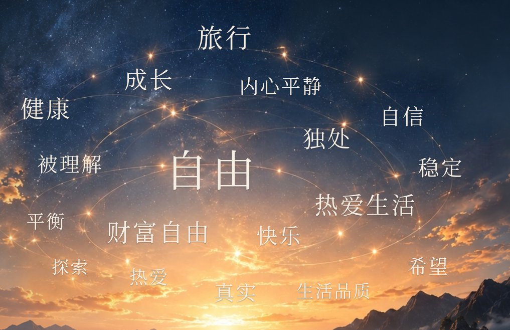
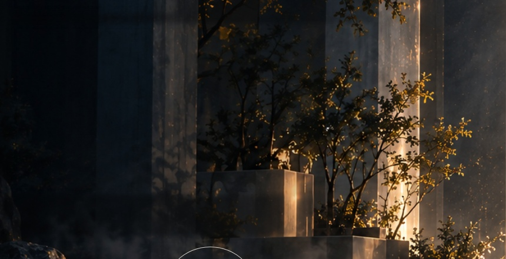
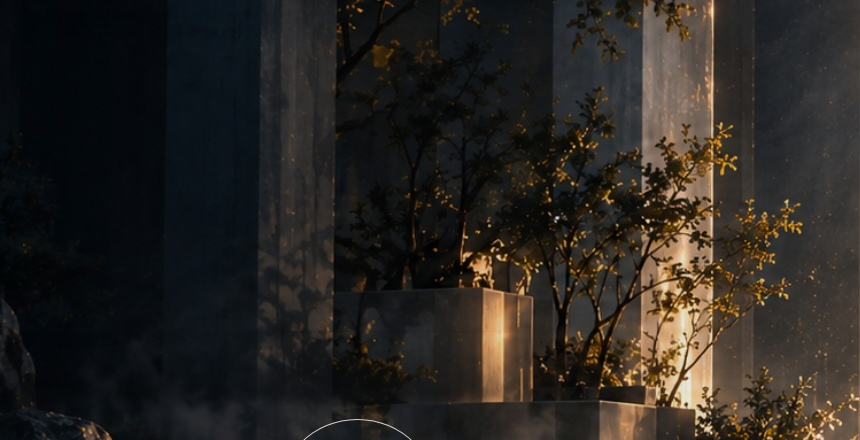

打开网站文字背景矩形色块修复
主要问题位于原有背景合成：去除图片旧文字的矩形窗口，与外层场景接受了不同的明暗处理。标题与词条本身并没有背景色。现已统一现有场景暗化层的层级，并对标题、词云去字区域使用连续的静态透明度遮罩；没有模糊画面、重新生成背景或添加文字底板。
七页标题的文案、字体、字重、字号与位置未改。18 个词条的数据、大小权重、分布与点击功能未改。第六页镜面寄语区域与修改前逐像素相同；第 01 页检查未发现标题容器矩形，三种宽度截图与修改前相同。
Page 01 原始 PNG · Page 06 原始 PNG · Page 07 原始 PNG · 词云局部 PNG
第七页词云局部

文字周围背景的前后对比
以下截图临时隐藏 HTML 标题与词云，让背景接缝本身可以直接审核；正式网页保留全部文字。
Page 02 · 隐藏 HTML 文字后检查背景
修改前：矩形去字窗口的边界修改后：连续的场景融合，无文字底板
Page 06 · 隐藏 HTML 文字后检查背景

修改前：矩形去字窗口的边界
修改后：连续的场景融合，无文字底板Page 07 · 隐藏 HTML 文字后检查背景
修改前：矩形去字窗口的边界修改后：连续的场景融合，无文字底板
七页预览
1920px · 七页浏览器截图
1366px · 七页浏览器截图
390px · 七页浏览器截图
已执行检查
- Chromium 与 Playwright WebKit：1920×1080、1366×768、390×844，全部七页实际输入、导航、截图与词云选择/取消。
- 全部标题与词条的字体、字重、字号、位置和文案与修改前逐项比较一致；所有标题和词条无背景、无 box-shadow、无 backdrop-filter。
- Page 02、04 及实际位于 Page 06 的分享意愿玻璃弹窗，在 1920、1366、390、320px 实际触发；同意、拒绝、返回编辑与退出回归通过。
- 词云静置 1.5 秒，Performance 记录 0 次 Paint；无运行中的动画、无 Canvas、无新增背景图片或大范围模糊滤镜。
- 原有背景解码就绪控制与延迟画层测试保留并通过；背景资源 URL 与大小未变。
完整检查 JSON · 玻璃弹窗回归结果
验证限制：Linux Playwright WebKit 不代表真实 macOS Safari。云代理下外部字体 CSS 在本地 Chromium 有证书信任错误，使用项目原有回退字体；字体配置未改。真实麦克风硬件与真实 AI/云服务未重测，其代码未修改。